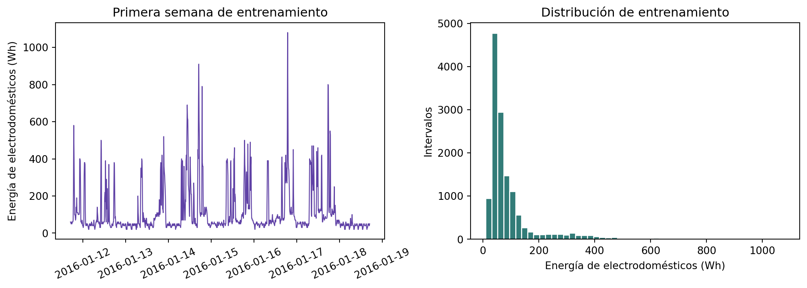
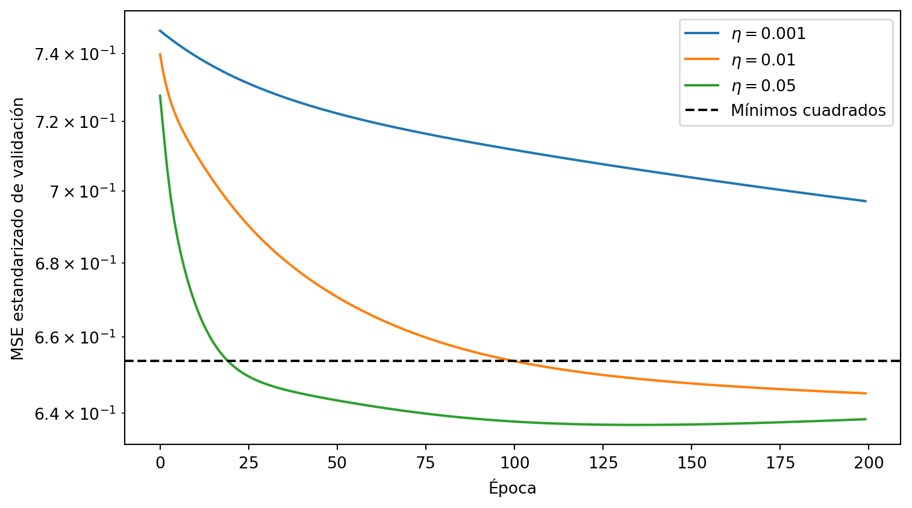

Problema: estimar el consumo energético de los electrodomésticos durante un intervalo de diez minutos a partir de sensores de temperatura, humedad, clima y calendario. El propósito no es solo obtener una predicción: abriremos el proceso para observar cómo una pérdida modifica los parámetros de un modelo.
2.1 Del problema aplicado al problema de aprendizaje
Una vivienda de bajo consumo contiene sensores ambientales, pero medir por separado la energía de los electrodomésticos puede requerir instrumentación adicional. Construiremos un sensor virtual que estime el consumo del intervalo actual a partir de la información ambiental y temporal disponible al final de ese intervalo.
Esta formulación es importante. No afirmaremos que el modelo pronostica el consumo futuro: varias entradas se observan durante el mismo periodo que el objetivo. Tampoco interpretaremos los coeficientes como efectos causales. El sistema resuelve una regresión supervisada contemporánea.
NotaObjetivos de aprendizaje
Al terminar este capítulo podrás:
traducir un problema aplicado a entradas, objetivo, unidad de análisis y criterio de éxito;
crear particiones temporales de entrenamiento, validación y test;
establecer líneas base antes de entrenar un modelo;
expresar regresión lineal y error cuadrático en forma matricial;
obtener una solución de mínimos cuadrados con torch.linalg.lstsq;
derivar e implementar el gradiente del error cuadrático;
verificar un gradiente manual mediante autograd;
entrenar nn.Linear con mini-batches, Dataset y DataLoader;
distinguir parámetros, hiperparámetros, pérdida y métricas; y
evaluar una vez en test, analizar residuos y declarar limitaciones.
Los cálculos de mínimos cuadrados y gradiente batch permanecerán en CPU para que sean reproducibles y fáciles de inspeccionar. El entrenamiento con mini-batches utilizará el dispositivo disponible.
2.3 Obtener y validar los datos
El dataset Appliances Energy Prediction registra 19.735 intervalos consecutivos de diez minutos entre enero y mayo de 2016. Incluye consumo en Wh, temperatura y humedad en nueve espacios, mediciones exteriores y clima de una estación cercana (Candanedo 2017; Candanedo et al. 2017). Se distribuye con licencia CC BY 4.0.
La descarga se guarda en caché. Leemos el CSV directamente desde el ZIP y verificamos nombre, columnas y número de observaciones antes de modelar.
observaciones 19735
variables 29
inicio 2016-01-11 17:00:00
fin 2016-05-27 18:00:00
intervalo_modal 0 days 00:10:00
faltantes 0
dtype: object
Dos columnas, rv1 y rv2, son variables aleatorias añadidas por los autores para comprobar si un método asigna importancia a ruido. Las excluiremos de las entradas. Esta decisión usa el diccionario de datos, no una correlación calculada sobre test.
2.4 Crear y bloquear las particiones temporales
Una división aleatoria mezclaría enero y mayo en entrenamiento y test. El protocolo debe representar el uso propuesto: ajustar con el pasado y aplicar el modelo a periodos posteriores.
Usaremos:
70% inicial para estimar parámetros y transformaciones;
15% siguiente para comparar tasas de aprendizaje y estados del modelo;
count 13814.0
mean 98.8
std 106.9
min 10.0
50% 60.0
75% 100.0
90% 220.0
99% 590.0
max 1080.0
Name: Appliances, dtype: float64
fig, axes = plt.subplots(1, 2, figsize=(11, 4))initial_window = train_frame.iloc[: 7*24*6]axes[0].plot( initial_window["date"], initial_window["Appliances"], color="#6042a6", linewidth=0.9,)axes[0].set_title("Primera semana de entrenamiento")axes[0].set_ylabel("Energía de electrodomésticos (Wh)")axes[0].tick_params(axis="x", rotation=25)axes[1].hist( train_frame["Appliances"], bins=50, color="#327c78", edgecolor="white",)axes[1].set_title("Distribución de entrenamiento")axes[1].set_xlabel("Energía de electrodomésticos (Wh)")axes[1].set_ylabel("Intervalos")plt.tight_layout()plt.show()

Figura 2.1: Consumo en la partición de entrenamiento: serie inicial y distribución completa.
Esta forma afecta la evaluación. El RMSE penaliza fuertemente los errores en picos; el MAE describe un error absoluto típico con menor influencia de esos picos. Reportaremos ambos y evitaremos llamar a cualquiera de ellos un “score” genérico.
2.6 Definir entradas y transformaciones
Usaremos temperaturas y humedades interiores, clima exterior, consumo de luces y calendario. La hora y el día semanal son cíclicos: las 23:50 y las 00:00 deben estar cerca. Para una variable periódica \(t\) de periodo \(P\):
Aplicar medias o desviaciones calculadas con validación o test permitiría que información futura influyera en el desarrollo del modelo.
2.7 Establecer líneas base
Antes de optimizar pesos necesitamos saber si aprender características aporta algo. Compararemos dos predictores constantes estimados con entrenamiento:
la media minimiza el error cuadrático sobre entrenamiento;
la mediana minimiza el error absoluto sobre entrenamiento.
Es posible que una línea base sea mejor en MAE y otra en RMSE. Esto no es una contradicción: optimizan aspectos distintos de la distribución de errores.
2.8 Formular la regresión lineal
Para una observación estandarizada \(\mathbf{x}_i\in\mathbb{R}^d\), el modelo calcula
donde \(\mathbf{w}\in\mathbb{R}^d\) y \(b\in\mathbb{R}\) son parámetros aprendidos. Con \(N\) observaciones, matriz \(\mathbf{X}\in\mathbb{R}^{N\times d}\) y una columna de unos para el intercepto:
La pérdida guía la estimación de parámetros. RMSE y MAE se reportan en Wh para evaluar el modelo; no deben confundirse con el objetivo estandarizado de entrenamiento.
2.9 Una solución de mínimos cuadrados
La expresión conocida como ecuación normal involucra \((\widetilde{\mathbf{X}}^\mathsf{T}\widetilde{\mathbf{X}})^{-1}\), pero formar esa inversa explícitamente es innecesario e inestable cuando hay variables correlacionadas. torch.linalg.lstsq utiliza una solución numérica de mínimos cuadrados.
MAE 52.3
RMSE 86.4
Name: Mínimos cuadrados en validación, dtype: float64
Esta solución establece una referencia para comprobar los métodos iterativos. En modelos profundos no existe una solución cerrada equivalente; por eso el descenso por gradiente es central.
2.10 Derivar el gradiente
El gradiente del MSE respecto a todos los parámetros es
La validación, no test, selecciona la tasa. Primero observamos las trayectorias.
fig, ax = plt.subplots(figsize=(8, 4.5))for rate, run in batch_runs.items(): ax.plot(run["validation_loss"], label=fr"$\eta={rate}$")ax.axhline( torch.mean((validation_lstsq_std - y_validation) **2).item(), color="black", linestyle="--", label="Mínimos cuadrados",)ax.set_xlabel("Época")ax.set_ylabel("MSE estandarizado de validación")ax.set_yscale("log")ax.legend()plt.tight_layout()plt.show()

Figura 2.2: La tasa de aprendizaje controla la rapidez de convergencia del mismo modelo lineal.
learning_rate_results = pd.DataFrame({"tasa": learning_rates,"MSE entrenamiento final": [ batch_runs[rate]["training_loss"][-1] for rate in learning_rates ],"MSE validación final": [ batch_runs[rate]["validation_loss"][-1] for rate in learning_rates ],}).sort_values("MSE validación final")selected_learning_rate =float(learning_rate_results.iloc[0]["tasa"])theta_batch = batch_runs[selected_learning_rate]["theta"]learning_rate_results.round(4)
tasa
MSE entrenamiento final
MSE validación final
2
0.050
0.7933
0.6385
1
0.010
0.8109
0.6452
0
0.001
0.8908
0.6972
Una tasa demasiado pequeña avanza lentamente. Una tasa mayor puede converger antes, pero eventualmente valores aún mayores producirían oscilación o divergencia. La escala de las variables cambia esta geometría; esa es una razón computacional para estandarizar.
2.11 Verificar el gradiente con autograd
Repetiremos exactamente el entrenamiento batch, pero pediremos a PyTorch que calcule el gradiente. La estructura del algoritmo permanece visible.
Autograd no elige la pérdida, la tasa, las variables ni el protocolo de evaluación. Solo automatiza la regla de la cadena una vez que definimos el cálculo.
2.12 Entrenar con nn.Linear y mini-batches
nn.Linear(d, 1) encapsula \(\mathbf{w}\) y \(b\). El optimizador actualiza esos parámetros, mientras DataLoader entrega subconjuntos aleatorios del periodo de entrenamiento.
Usaremos una tasa menor que en batch porque ahora una época contiene muchas actualizaciones ruidosas. El número de épocas y la tasa se fijan antes de abrir test; validación conservará el mejor estado observado.
mejor época según validación 18.000000
mejor MSE estandarizado 0.633151
dtype: float64
Guardar el mejor estado es una decisión de selección. La pérdida de validación no es una estimación independiente del desempeño final porque participó en esa decisión.
Los tres procedimientos lineales producen resultados cercanos, pero no idénticos. Mínimos cuadrados minimiza MSE de entrenamiento, mientras el estado de SGD se selecciona por validación antes de converger al óptimo de entrenamiento; esa parada actúa como regularización implícita. Las diferencias no provienen de una familia funcional distinta.
2.14 Evaluar una vez en test
Las decisiones están cerradas. Ahora transformamos test con estadísticas de entrenamiento y calculamos predicciones una sola vez.
La regresión lineal puede mejorar RMSE al representar parte de los picos y, al mismo tiempo, perder frente a la mediana en MAE. El resultado muestra por qué la elección de métrica forma parte del problema y no debe decidirse después de ver test.
2.15 Diagnosticar predicciones y residuos
Usaremos el modelo de mínimos cuadrados para el diagnóstico porque representa el óptimo numérico de la pérdida lineal estudiada. El residuo se define como \(e_i=y_i-\widehat{y}_i\).
Figura 2.4: Diagnóstico final del modelo lineal en el periodo de test.
test_diagnostics = pd.Series({"residuo medio": test_residuals.mean().item(),"MAE en consumo bajo (<= mediana de test)": test_residuals[ y_test_raw <= y_test_raw.median() ].abs().mean().item(),"MAE en consumo alto (> mediana de test)": test_residuals[ y_test_raw > y_test_raw.median() ].abs().mean().item(),"correlación residuo-predicción": torch.corrcoef(torch.stack([ test_residuals, selected_test_predictions, ]))[0, 1].item(),})test_diagnostics.round(1)
residuo medio -6.2
MAE en consumo bajo (<= mediana de test) 35.8
MAE en consumo alto (> mediana de test) 66.7
correlación residuo-predicción -0.1
dtype: float64
Una nube comprimida alrededor de la media y errores mayores en consumos altos son señales de capacidad limitada. El modelo lineal no representa con facilidad interacciones, umbrales ni dinámicas temporales complejas. Estas observaciones motivan las redes no lineales del próximo capítulo; no autorizan a regresar a selección después de consultar test.
2.16 Interpretar parámetros con cautela
Como las entradas y el objetivo están estandarizados, la magnitud absoluta de un coeficiente permite una comparación descriptiva dentro del modelo.
Un coeficiente no es un efecto causal. Temperaturas y humedades de distintas habitaciones están correlacionadas; el valor asignado a una variable depende de cuáles otras están en el modelo. La importancia tampoco demuestra que el sensor estará disponible o medirá lo mismo en producción.
2.17 Qué hemos aprendido
La formulación determina si el sistema estima el presente o pronostica el futuro.
Una partición temporal evalúa aplicación a periodos posteriores y evita mezclar indiscriminadamente el tiempo.
Las transformaciones se estiman solo con entrenamiento.
Media y mediana son líneas base asociadas a pérdidas distintas.
La regresión lineal aprende parámetros minimizando una función de pérdida.
torch.linalg.lstsq, gradiente manual, autograd y nn.Linear pueden estimar la misma familia funcional por rutas computacionales diferentes.
Autograd calcula derivadas; no selecciona variables, métricas ni protocolos.
Validación permite seleccionar hiperparámetros y estados; test se abre una sola vez.
RMSE y MAE pueden preferir modelos diferentes cuando el objetivo es asimétrico.
Los residuos muestran fallos que una métrica promedio oculta.
2.18 Limitaciones del caso
El dataset corresponde a una sola vivienda y aproximadamente cuatro meses. No permite afirmar generalización a otros hogares, climas, ocupaciones o equipos. Las variables ambientales contemporáneas tampoco convierten este análisis en un pronóstico. Antes de desplegar se necesitarían validación externa, auditoría de sensores, definición de latencia, manejo de valores faltantes y monitoreo de cambio de distribución.
2.19 Ejercicios
Recalcula las líneas base con entrenamiento y explica por qué la media y la mediana minimizan pérdidas diferentes.
Sustituye la partición temporal por una aleatoria. Compara resultados y argumenta por qué el valor obtenido responde a otra pregunta de evaluación.
Implementa MAE como pérdida de entrenamiento. Compara su gradiente y su desempeño con el MSE, sin modificar decisiones después de consultar test.
Elimina la estandarización de entradas y repite las curvas de tasas de aprendizaje. Explica el resultado mediante la geometría de la pérdida.
Implementa descenso por gradiente estocástico sin torch.optim y comprueba cómo cambia la trayectoria de la pérdida.
Añade weight decay a nn.Linear. Selecciona su intensidad en validación y compara coeficientes y RMSE.
Construye una validación temporal con ventanas expansivas en lugar de una sola partición. Reporta variación entre periodos.
Ajusta un modelo lineal para log1p(Appliances) y transforma las predicciones de regreso a Wh. Discute qué métrica y qué regiones del objetivo cambian.
Analiza MAE por hora del día y día de la semana. Identifica periodos donde el sensor virtual falla sistemáticamente.
Redacta un contrato de entrada que especifique columnas, unidades, rangos, frecuencia y estrategia ante sensores ausentes.
2.20 Reto
Construye una versión de pronóstico a diez minutos. Desplaza el objetivo un intervalo hacia el futuro, elimina cualquier entrada que no estaría disponible al emitir la predicción y crea características rezagadas usando solo el pasado. Compara contra persistencia y documenta exactamente por qué este nuevo sistema responde a una pregunta diferente del capítulo.
Candanedo, Luis M., Véronique Feldheim, y Dominique Deramaix. 2017. «Data driven prediction models of energy use of appliances in a low-energy house». Energy and Buildings 140: 81-97. https://doi.org/10.1016/j.enbuild.2017.01.083.